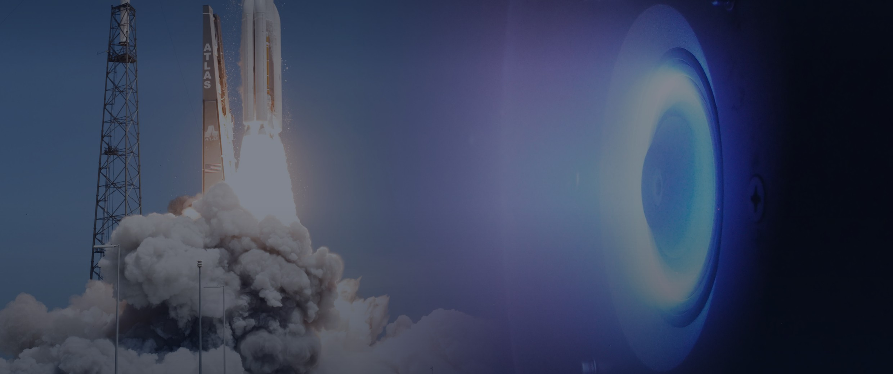
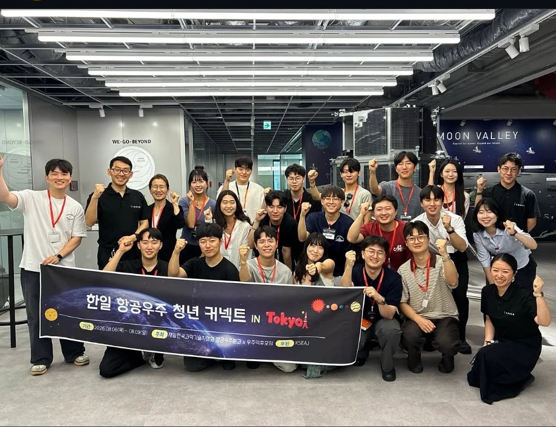
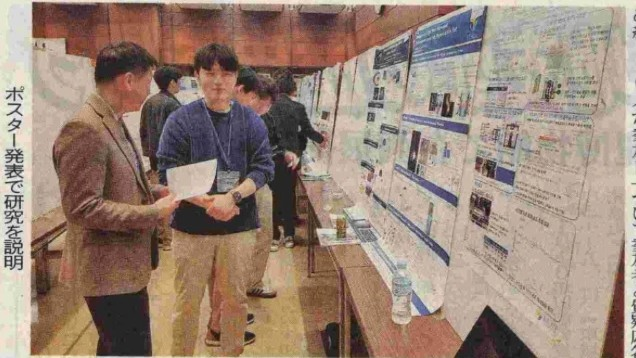
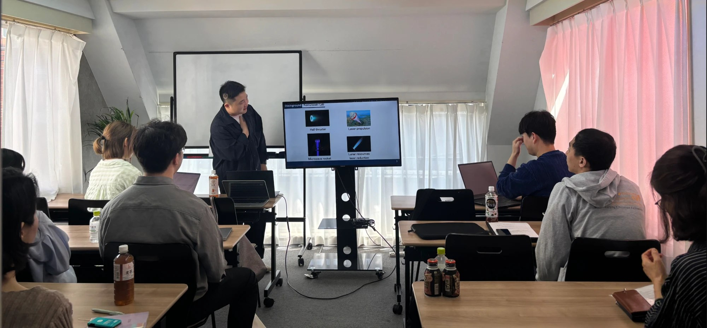
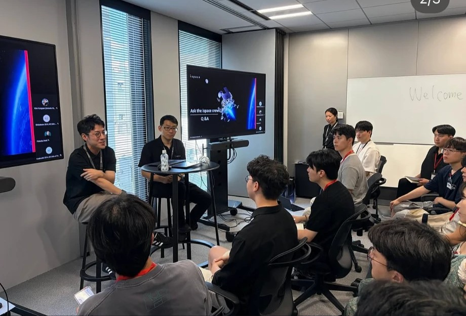
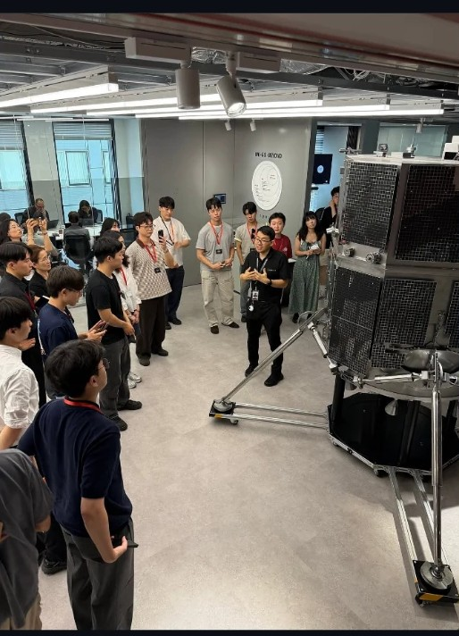

일본 각지의 대학과 연구기관에 흩어져 있는 항공우주 분야 한국인 유학생·연구자를 하나의 네트워크로 잇습니다. 연구를 나누고, 정보를 모으고, 함께 성장합니다.
항공우주는 연구실 하나하나가 대형 프로젝트 단위로 움직이는 분야라, 같은 분야에서도 서로를 만나기 어렵습니다. 2024년 도쿄대학 대학원생 4명의 제안으로 출발한 분과회는 세 가지 목적을 가지고 있습니다.
대학과 기관의 벽을 넘어, 일본에서 항공우주를 연구하는 한국인들의 인적 네트워크를 만듭니다. 모든 활동의 출발점입니다.
연구 교류로 서로의 학문적 성장을 돕고, 친목으로 지속 가능한 커뮤니티를 만듭니다. 발표회·세미나·교류회가 그 자리입니다.
다른 분과회와의 교류와 합동분과회 참가로 접점을 넓히고, 과학 분야 전반의 융합과 발전에 기여합니다.
위성 하나에도 추진·열·구조·전력·통신·제어가 동시에 들어갑니다. 항공우주로 확장될 수 있다면 대기·환경·유체·데이터까지, 모두 우리의 분야입니다.
재일과협 최대의 학술 행사에서 분과회 이름으로 포스터 발표를 합니다. 전공이 다른 연구자들 앞에서 내 연구를 설명해 보는 기회이자, 이력서에 남는 공식 발표 실적입니다. 초대강연과 패널 토론도 함께 열립니다.
매 학기 학기초, 서로의 연구를 소개하고 신입 회원을 맞이하는 자리를 엽니다.
동문회·학회 네트워크로 멘토를 연결하고 진학·취업·연구 워크숍을 엽니다.
한국연구재단 간담회, 한국항공우주연구원(KARI) 세미나 등 한국 기관과 직접 만납니다.
학진(JSPS)·장학금·Travel grant·공모전 마감 정보와 합격 서류 예시를 함께 모읍니다.





도쿄대학 공학계연구과 항공우주공학전공 박사과정 · JSPS 특별연구원(DC1)
전기추진 — DSMC 기반 아르곤 홀 스러스터 연구
도쿄대학 공학계연구과 항공우주공학전공 박사과정
물–마그네슘 마이크로 하이브리드 추진 연구 · 분과회 설립을 주도
일본 소재 대학·연구기관의 항공우주 관련 분야 한국인 학생·연구자라면 누구나 — 학부생부터 석박사, 포닥까지 환영합니다.
l.jiwon@al.t.u-tokyo.ac.jp분과회장 이지원 · 도쿄대학 공학계연구과 항공우주공학전공 박사과정